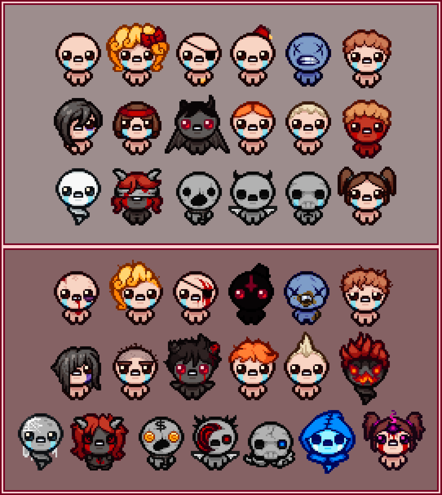

The Binding of Isaac no es solo un videojuego roguelike de acción y aventura desarrollado por Edmund McMillen y Florian Himsl, es una experiencia que redefine el género gracias a su infinita rejugabilidad y a la profunda sinergia de sus objetos.
Cada personaje en el juego no solo se limita a tener estadisticas iniciales diferentes, sino que cada uno tiene su mecánica única que hara que jugar con cada uno sea una experiencia diferente, teniendo 17 personajes en total a elegir, pero no conformes con eso, cada personaje cuanta con una version llamada Tainted, la cual cambia radicalmente la forma de jugar con ese personaje, teniendo asi un total de 34 personajes jugables.
Si bien cada personaje tiene su apariencia única, esta va cambiando a lo largo de la partida, ya que cada objeto que consigamos durante la partida no solo nos proporciona una mejora a nuestro personaje, sino que también modifica la apariencia, y mientras mas objetos tienes peor sera tu apariencia.